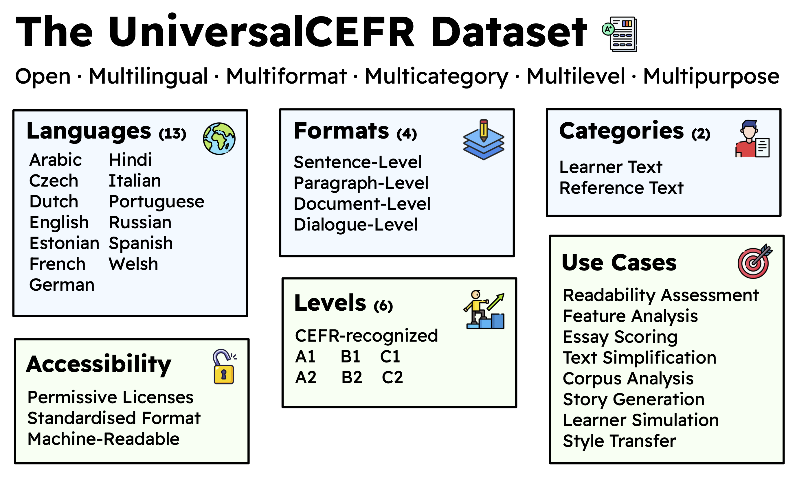

UniversalCEFR: Enabling Open Multilingual Research on Language Proficiency Assessment

Contact: jmri20@bath.ac.uk, alvamanchegof@cardiff.ac.uk
Contact: jmri20@bath.ac.uk, alvamanchegof@cardiff.ac.uk
Language proficiency assessment is foundational to advancing educational research and many natural language processing (NLP) applications, particularly for tasks like automatic readability assessment (ARA) and automated essay scoring (AES). The Common European Framework of Reference for Languages or CEFR is one of the most globally recognized frameworks for standardised assessment of proficiency across different languages and countries. However, despite CEFR's role as the de facto framework, most language proficiency assessment datasets based on the CEFR suffer from several access and interoperability limitations:
We introduce UniversalCEFR, a large, standardised, open, multilingual dataset of CEFR-labeled texts for language proficiency assessment research, consolidated from 26 existing corpora and accessible for non-commercial research. It brings together 505,807 texts labeled with CEFR levels across 13 languages and 4 scripts (Latin, Cyrillic, Arabic, and Devanagari).

The dataset includes various text categories including learner texts (e.g., essays, writing samples) and reference texts (e.g., curated reading materials); diverse text-level granularities including sentence, paragraph, document, and dialogue levels; and full CEFR scale coverage from A1 to C2.
For UniversalCEFR, we use a structured and standardised JSON format containing necessary per-instance information in the form of eight (8) metadata fields for each CEFR-labelled texts included in the dataset. The table below lists the text fields, descriptions, and examples for each field. All instances that were validated and included in the collection of CEFR-labelled corpora for UniversalCEFR conform to this format.
| Field | Description |
|---|---|
title |
The unique title of the text retrieved from its original corpus (NA if there are no titles such as CEFR-assessed sentences or paragraphs). |
lang |
The source language of the text in ISO 639-1 format (e.g., en for English). |
source_name |
The source dataset name where the text is collected as indicated from their source dataset, paper, and/or documentation (e.g., cambridge-exams from Xia et al. (2016)). |
format |
The format of the text in terms of level of granularity as indicated from their source dataset, paper, and/or documentation. The recognized formats are the following: document-level, paragraph-level, discourse-level, sentence-level. |
category |
The classification of the text in terms of who created the material. The recognized categories are reference for texts created by experts, teachers, and language learning professionals and learner for texts written by language learners and students. |
cefr_level |
The CEFR level associated with the text. The six recognized CEFR levels are the following: A1, A2, B1, B2, C1, C2. |
license |
The licensing information associated with the text (e.g., CC-BY-NC-SA 4.0). |
text |
The actual content of the text itself. |
Beyond its data and technical contributions, UniversalCEFR also carries broader sociolinguistic significance. UniversalCEFR addresses the growing linguistic inequality in modern AI development through focusing on under-represented languages alongside English.
We also hope this initiative can lead to more responsible AI development that actively resists the growing linguistic centralization around English in global AI research—a modern Matthew effect—where well-resourced languages receive disproportionate technological attention while smaller languages (like Czech or Welsh) are left behind. The UniversalCEFR is a strong step towards mitigating the Matthew effect
We want to grow this community of researchers, language experts, and educators to further advance openly accessible CEFR and language proficiency assessment corpora for all. If you're interested in this direction, please feel free to join the Huggingface and Github Organizations in the links above.
Moreover, if you have corpora or datasets you want to add to UniversalCEFR for better exposure and utility to researchers around the world, please fill up this form.
When we index your dataset to UniversalCEFR, we will cite you and the paper or project from which the dataset came across the UniversalCEFR platforms. The ownership and copyright of any dataset indexed in UniversalCEFR remain with original data creators.